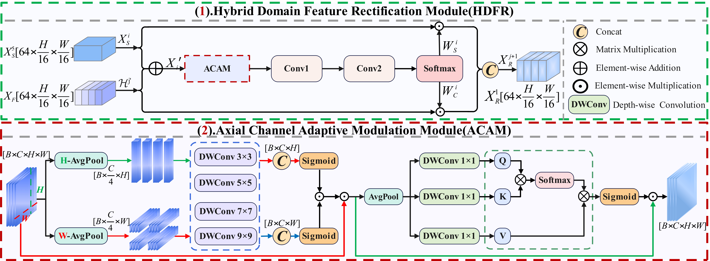
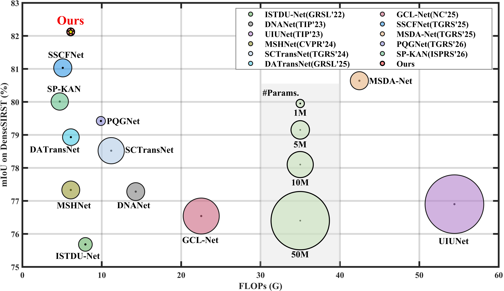
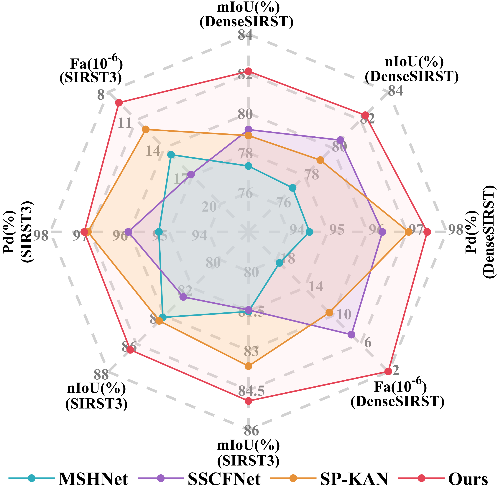
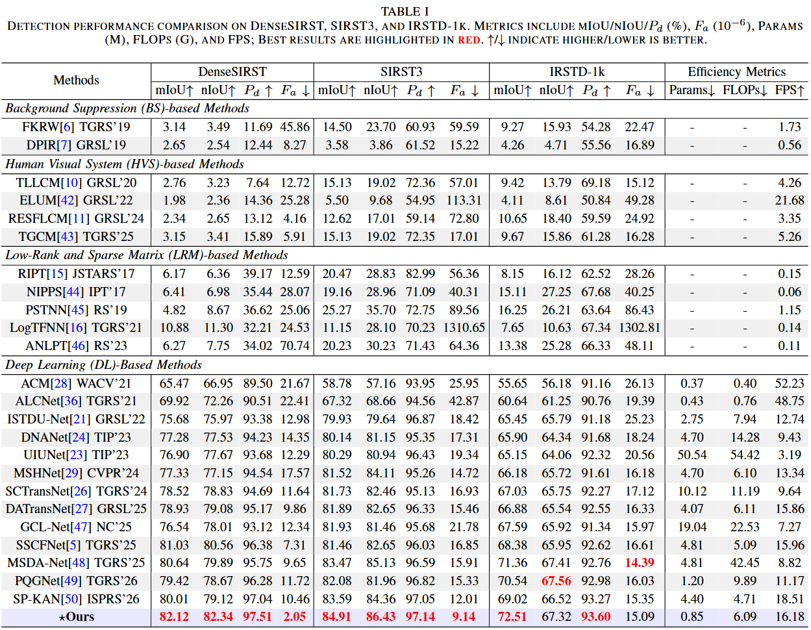
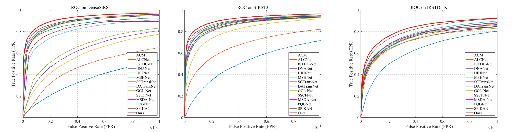
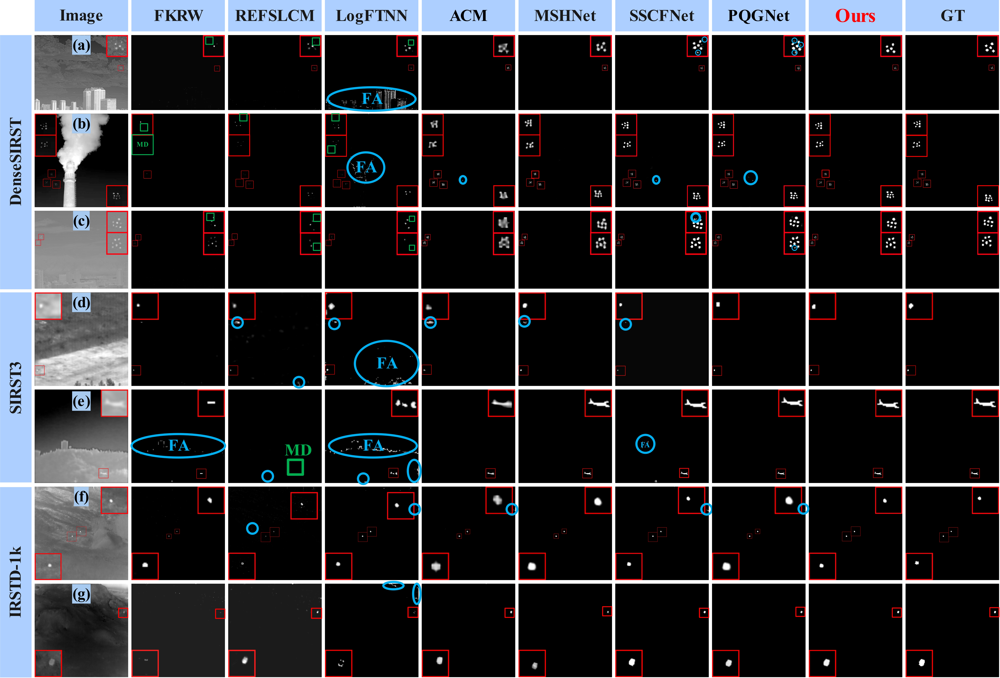

Clustered infrared small target detection aims to distinguish densely adjacent small targets under low signal-to-noise ratios, weak textures, and complex background interference, which makes it more prone to response coupling, target adhesion, and background false alarms than conventional sparse infrared small target detection. Existing methods mainly emphasize single-target saliency enhancement or local structural modeling, but remain insufficient in exploiting inter-target spatial dependencies, spectral discrepancies, and cross-domain feature collaboration. To address these issues, this paper proposes a Spatial–Spectral Differential Rectification Network, termed S2DRNet, to improve clustered-target discrimination from spatial, spectral, fusion, and supervision perspectives. Specifically, S2DRNet suppresses response diffusion among adjacent targets through multi-granularity dynamic aggregation, enhances target details while weakening background disturbances through spectral differential representation, adaptively complements spatial semantics with frequency-domain structural cues through hybrid-domain feature rectification, and strengthens the optimization of target-separation regions using a coupling-suppressed boundary mining loss. These designs jointly alleviate missed detections, false alarms, and boundary adhesion in clustered infrared small target detection. Extensive experiments on DenseSIRST, SIRST3, and IRSTD-1K demonstrate that S2DRNet achieves superior detection performance over representative state-of-the-art methods while maintaining a favorable accuracy–efficiency balance.

Dense and adjacent infrared small targets tend to produce mutually diffused responses, making individual targets adhere to each other and weakening target separation.
Target details, background edges, and high-frequency noise are easily mixed in complex infrared scenes, causing missed detections of weak targets and false alarms from non-target structures.
Direct fusion of spatial semantic features and frequency-domain structural priors may introduce redundant responses and unbalanced feature contributions.
Narrow gap regions between adjacent targets occupy very few pixels, so conventional segmentation losses provide limited supervision for target-separation boundaries.

The spatial branch progressively extracts multi-scale spatial features through residual blocks and the Multi-granularity Dynamic Aggregation Module (MDAM), thereby enhancing local target responses and suppressing response diffusion among adjacent targets.
The frequency-domain branch introduces the Spectral Differential Representation Module (SDRM) to decompose low-frequency structures and high-frequency details, while the Hybrid-Domain Feature Rectification Module (HDFR) adaptively integrates spatial semantics and frequency-domain priors. During training, the Coupling-suppressed Boundary Mining Loss (CBML) strengthens supervision on adjacent-target boundaries and gap regions.

MDAM enhances clustered-target spatial representation through square dynamic aggregation for local response enhancement and cross-strip dynamic aggregation for adjacent-target coupling suppression.
SDRM decomposes features into low-frequency structural components and high-frequency details, then refines target details and suppresses edge-noise interference through multi-directional differential convolution.

HDFR is designed to alleviate response inconsistency and redundant interference caused by direct cross-domain fusion. It first forms an initial hybrid-domain representation by combining spatial features with complementary frequency-aware features, and then uses axial-channel adaptive modulation to screen reliable responses from both spatial and channel dimensions.
Based on the modulated feature, HDFR generates branch-wise competitive attention maps for the spatial branch and complementary branch. This strategy improves cross-domain balance and produces progressively refined hybrid-domain representations for clustered target separation.




S2DRNet contains only 0.85M parameters and 6.09G FLOPs, while achieving 16.18 FPS. The results indicate a favorable balance between detection accuracy and deployment efficiency.


S2DRNet formulates clustered infrared small target detection as a target–background discrimination problem jointly driven by spatial aggregation, spectral decoupling, cross-domain rectification, and boundary mining. MDAM suppresses neighboring-target response diffusion, SDRM decouples background structures, target details, and noise disturbances, HDFR performs adaptive cross-domain feature rectification, and CBML strengthens boundary-gap supervision from the optimization perspective.
Extensive experiments demonstrate that S2DRNet outperforms representative existing methods on three public datasets while maintaining a favorable accuracy–efficiency balance.